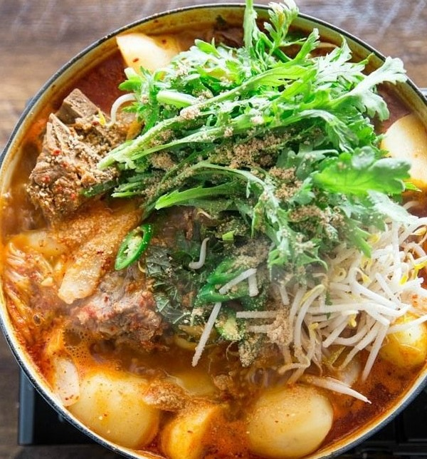

Gamjatang (Pork Bone Soup)
Ingredients
MAIN
- 1.4 kg pork neck bone (3 pounds), (try to pick the bones with lots of meat on them)
- 7 cups water
- 3 potatoes (500 g / 1.1 pounds), peeled & cut into smaller chunks
- 6 napa cabbage leaves (300 g / 10 ounces), rinsed
- 100 g mung bean sprouts (3.5 ounces), rinsed
- 30 g crown daisy leaves (1 ounce), rinsed (optional)
- 6 perilla leaves , thinly sliced (optional)
- 2 green chilies , thinly sliced (optional)
AROMATIC VEGETABLES
- 1 onion (160 g / 5.6 ounces), peeled & halved
- 30 g green onion (1 ounce), white part only
- 5 cloves garlic (30 g / 1 ounce), peeled
- 1 ginger (5 g / 0.2 ounce), peeled & thinly sliced
- 1 tsp whole black pepper
SEASONING BASE (MIX THESE WELL IN A BOWL)
- 3 Tbsp gochugaru (korean chili flakes)
- 2 Tbsp doenjang (korean soybean paste)
- 2 Tbsp rice wine
- 1 1/2 Tbsp minced garlic
- 1 Tbsp gochujang (korean chili paste)
- 1 Tbsp Korean fish sauce
- 1 Tbap water
- 1 tsp minced ginger
- A few sprinkles ground black peppers
OTHER CONDIMENTS
- 1/8 tsp fine sea salt
- 1 Tbsp toasted sesame seeds or wild sesame seeds, grounded
Directions
- Soak the pork bones in cold water for at least 1 hour (to get rid of any excess red liquid that looks like blood). Drain away the water. (If you can, try to change the water every 15 mins.)
- Place the bones into a large pot and add enough water to cover the bones, then boil it for about 10 minutes over medium high heat, covered. Drain away the water and rinse the bones in cold running water.
- In a large clean pot, place the bones and add the water (7 cups) and all ingredients from the “aromatic vegetables” section. Simmer it on medium to low heat for 1 hr 30 mins, covered.
- Put the potatoes in a separate pot and add enough water to cover them. Boil it over medium high heat until the potatoes are nearly cooked (about 90%). Drain away the water and set aside the potatoes until needed.
- Sieve the broth (from step 3) through the strainer and catch the broth in a large bowl. Also, keep the pork bones but discard any boiled spices/vegetables. It should result in about just under 5 cups of broth.
- Transfer the broth into a clean pot, then add back the pork bones, potatoes, cabbage leaves, and the seasoning base into the pot. Boil over medium high heat until the potatoes cook completely (10 to 15 mins).
- Reduce the heat to medium. Add the remaining vegetables (mung bean sprouts, crown daisy leaves, perilla leaves, and green chilies) and the ground sesame seeds into the pot and boil further 1 to 2 mins until they soften. Serve warm with steamed rice.
Go Back!